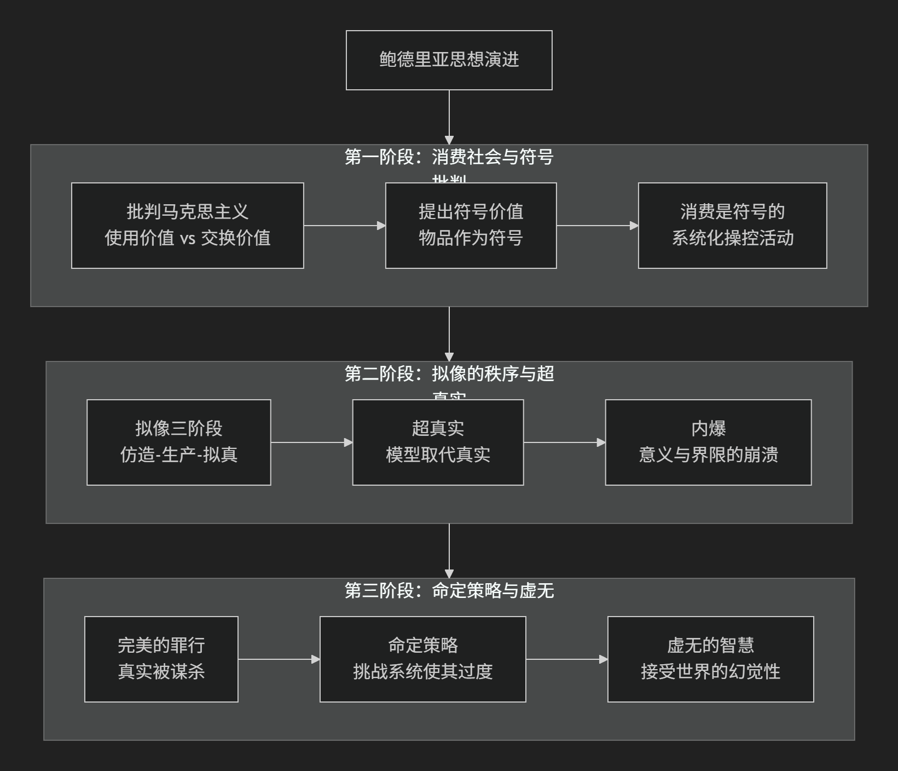

Baudrillard
基于让·鲍德里亚（Jean Baudrillard）哲学核心思想对陈京元博士案件进行评价。
让·鲍德里亚是20世纪下半叶最具挑衅性和争议性的法国思想家之一，他的思想以其 激进、悲观和高度抽象 的风格而著称。他最初被视为马克思主义者，但很快发展出了一套远超传统批判理论的、极具原创性的思想体系。
他的核心思想可以概括为：在现代消费社会中，“真实”本身已经逐渐消亡，取而代之的是一个由符号、模型和拟像构成的“超真实”世界。在这个新秩序中，符号不再指向任何现实，而是进行自我指涉的循环，最终导致意义的内爆和社会的终结。
鲍德里亚的思想发展有明显的阶段性，其核心演变可以通过下图清晰地展示：

第一阶段：消费社会与符号批判
早期鲍德里亚在马克思主义基础上，引入了符号学分析，对消费社会进行了深刻批判。
核心著作：《消费社会》、《符号政治经济学批判》
核心命题：现代人消费的 不是物品的使用价值，而是其“符号价值”。
符号价值：物品的价值不仅在于它能做什么（使用价值），也不仅在于它能交换什么（交换价值），更在于它 象征着什么 （社会地位、生活方式、品味等）。例如，购买奢侈品主要不是为了其质量，而是为了其彰显的社会身份。
消费是一种语言：消费行为是一个 符号系统，我们通过消费来沟通、区分和确立自己在社会中的位置。整个消费社会就是一个 由符号构成的编码体系，它系统地制造欲望，并通过对符号的差异化管理来实现社会整合。
第二阶段：拟像的秩序与超真实
这是鲍德里亚最著名、最核心的理论贡献，标志其与马克思主义的彻底决裂。
核心著作：《象征交换与死亡》、《拟像与仿真》
拟像的三重秩序：历史上市民社会经历了三个不同的“拟像秩序”：
仿造 的时代（文艺复兴至工业革命）：对应“自然价值”。仿造品参照一个原始模型（如仿造木材的灰泥）。
生产 的时代（工业时代）：对应“市场价值”。系列化生产使原件和复制品没有区别，一切根据市场规律批量制造。
拟真 的时代（当前由模型、代码和数字技术主导的时代）：对应“结构价值”。符号不再有现实的指涉物，而是由 模型 和 代码 先行生成，并构成一个 比真实更真实的“超真实”。
超真实：指 模型和拟像取代了真实，并变得比真实更加真实。例如：
迪士尼乐园：它被呈现为一个虚构之地，但其真正功能是掩盖整个洛杉矶乃至美国本身就已经是迪士尼乐园（超真实）这一事实。
现实电视秀：它们比日常生活显得更“真实”，从而定义了什么是真实。
内爆：鲍德里亚从麦克卢汉那里借用了这个概念，指 各种传统界限的崩溃 （如真实与虚构、公共与私人、媒介与信息）。在信息过载的时代，所有意义都坍塌进一个无差别的符号漩涡中。
第三阶段：命定策略与虚无的智慧
晚期鲍德里亚的思想变得更加激进和悲观，提出了一种近乎虚无主义的“命定策略”。
核心著作：《致命的策略》、《完美的罪行》
完美的罪行：指 谋杀了“真实”并完美地掩盖了罪行。我们生活在一个试图通过拟像、模型和虚拟来抹去真实所有痕迹的世界上。
命定策略：面对这个已经完成的、无法逆转的系统，传统的革命策略（反抗、辩证法的否定）都失效了。他提出，唯一可能的方式是 采取一种“命定策略”，即 比系统更加极端，引导系统走向其逻辑的极致，使其过度发展直至崩溃。例如，通过过度的顺从或夸张的模仿，来暴露系统的荒谬。
虚无的智慧：鲍德里亚的立场最终是一种 激进的虚无主义。他主张接受世界的根本幻觉性，放弃对意义、真理和真实的徒劳追寻。这是一种面对终极虚无的、带有悲剧色彩的智慧。
—
核心要义总结
思想阶段 |
核心命题 |
关键概念与贡献 |
|---|---|---|
消费社会批判 |
消费是对”符号价值”的消费，消费社会是一个符号操控系统。 |
符号价值、消费社会、符号政治经济学 |
拟像与超真实理论 |
“真实”已被由模型生成的”超真实”取代，我们生活在拟像的第三秩序中。 |
拟像三秩序、超真实、内爆、仿真 |
命定策略与虚无 |
“真实”已被完美谋杀，唯一的策略是引导系统走向其逻辑的极致直至崩溃。 |
完美的罪行、命定策略、激进的虚无主义 |
思想特质与影响
预言性：鲍德里亚的理论在互联网、虚拟现实和人工智能时代显得极具预见性。社交媒体、元宇宙等正是“超真实”的完美例证。
争议性：他因“真实已死”的极端论调和其理论的悲观虚无色彩而备受批评。
影响力：其思想深刻影响了文化研究、媒体理论、后现代哲学、艺术和电影（如《黑客帝国》就被认为深受其影响）。
总而言之，让·鲍德里亚的核心思想在于，他是一位 “真实”的悼亡者 和 后现代社会的冷酷诊断师。他描绘了一幅令人不安的图景：我们不再生活在现实之中，而是生活在一个由自身创造出来的、比现实更真实的 巨大模拟物 内部。他的全部工作是对我们这个符号泛滥、意义坍塌时代的终极警告和哲学沉思。